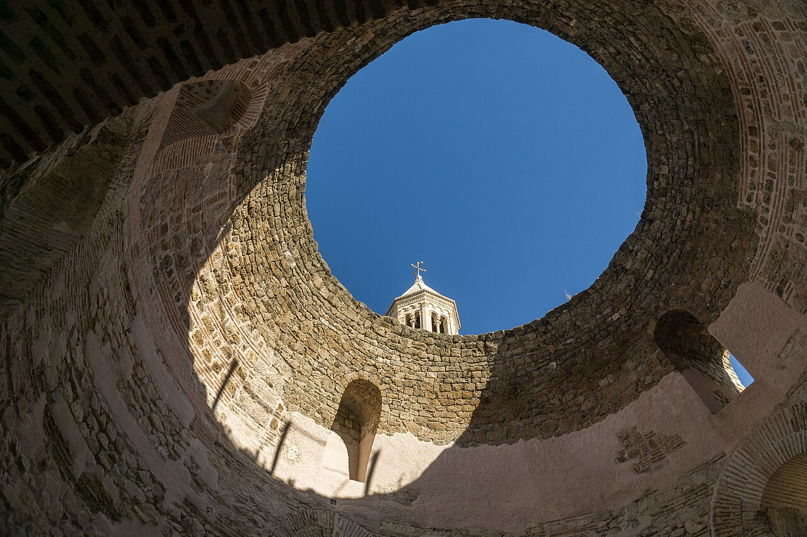

류블랴나 자그레브
일반- 수단
- 기차 · EC·국제 열차 직행
- 소요
- 약 2시간 20분
- 환승
- 직행
하루 4~6회. FlixBus도 2시간 20분 안팎.
발칸 · 아드리아해
Balkan capitals
옛 유고슬라비아 나라들의 수도를 차례로. 해외 21일 "발칸 수도와 문화" 일정을 2주 안팎으로.


류블랴나와 자그레브에서 시작해 기차로 베오그라드까지 가고, 버스로 사라예보와 모스타르를 지나 두브로브니크에서 끝냅니다.


지도: © OpenStreetMap 기여자
현지 14박 15일 · 류블랴나 2박 → 자그레브 2박 → 베오그라드 3박 → 사라예보 3박 → 모스타르 2박 → 두브로브니크 2박
도착 인천 → 류블랴나 공항. 도착일은 숙소 주변 위주로 가볍게.
프레셰렌 광장 → 삼중교 → 플레치니크 시장 → 용의 다리 → 류블랴나 성(푸니쿨라) → 류블랴니차 강변 카페.
금요일(봄~가을)에는 "오픈 키친" 음식 장터가 열립니다.
숙박: 류블랴나
버스 약 1시간 → 포스토이나 동굴 열차 투어 → 절벽에 박힌 프레드야마 성(여름 셔틀).
동굴 안은 일 년 내내 10℃ 안팎입니다.
숙박: 류블랴나
이동 류블랴나 → 자그레브 · 기차 약 2시간 20분 일반
반 옐라치치 광장 → 돌라츠 시장 → 자그레브 대성당 → 성 마르코 성당 → 로트르슈차크 탑 → 실연 박물관.
12월 "어드벤트 자그레브"는 유럽 최고 크리스마스 마켓으로 여러 번 뽑혔습니다.
숙박: 자그레브
레누치 말굽 공원 → 미마라 박물관 → 트칼치체바 카페 거리 → 미로고이 묘지.
숙박: 자그레브
이동 자그레브 → 베오그라드 · 기차 약 6시간 30분 일반
크네즈 미하일로바 거리 → 칼레메그단 요새(사바·도나우강 합류 일몰) → 스카다를리야 전통 식당가.
숙박: 베오그라드
성 사바 대성당 → 니콜라 테슬라 박물관(투어 시간 확인) → 유고슬라비아 박물관·티토 묘 → 사바말라 강변.
숙박: 베오그라드
제문 가르도시 탑 → 도나우 강변 생선 식당 → 아다 치간리야 호수(여름 수영).
숙박: 베오그라드
이동 베오그라드 → 사라예보 · 버스 약 7시간 30분 확인
바슈차르시야·세빌리 분수 → 가지 후스레브 베그 모스크 → "문화가 만나는 선" → 라틴교 → 시청사(비예치니차) → 노란 요새 일몰.
체바피와 보스니아 커피를 꼭 맛보세요.
숙박: 사라예보
희망의 터널 박물관 → 전쟁 아동 박물관 또는 갤러리 11/07/95 → 트레베비치산 케이블카·옛 봅슬레이 트랙.
숙박: 사라예보
브렐로 보스네(보스나강 수원 공원) → 스베르소 스카이라인 → 일리자 산책.
숙박: 사라예보
이동 사라예보 → 모스타르 · 기차 약 2시간 5분 확인
쿠윤질루크 장터 → 스타리 모스트 다이빙 구경 → 코스키 메흐메드 파샤 모스크 첨탑 전망 → 비셰비차 저택.
당일 관광객이 떠난 저녁에 다리 조명이 가장 예쁩니다.
숙박: 모스타르
블라가이 수도원(강 수원) → 포치텔 성곽 마을 → 크라비차 폭포. 투어나 택시 대절이 편합니다.
숙박: 모스타르
이동 모스타르 → 두브로브니크 · 버스 약 3시간 30분 확인
필레 문 → 스트라둔 대로 → 성벽 한 바퀴(약 2km) → 스르지산 케이블카 일몰.
성벽은 개장 직후나 늦은 오후가 덜 덥고 덜 붐빕니다.
숙박: 두브로브니크
로브리예나츠 요새 → 로크룸섬(배 15분) 수영·산책 → 반예 해변 → 구항구 저녁.
숙박: 두브로브니크
오전에 못 본 곳을 둘러보고 공항으로 이동합니다. 귀국편은 대부분 다음 날 한국에 도착합니다.
하루 4~6회. FlixBus도 2시간 20분 안팎.
6~7시간. 크로아티아(솅겐)→세르비아 국경 심사.
7~8시간. 직행 열차는 없습니다. 항공편(약 55분)도 있습니다.
네레트바 협곡을 지나는 경치 좋은 철도. 버스는 2시간 30분, 편수가 더 많습니다.
하루 2~3회, 3시간 20분~3시간 40분. 여권 필요.
국경 솅겐(슬로베니아·크로아티아)과 비솅겐(세르비아·보스니아) 국경을 오갑니다.
이스탄불·프랑크푸르트·뮌헨 등에서 1회 경유. 편수가 적어 자그레브·비엔나·베네치아 공항 + 육로 이동과 비교해 보세요.
이스탄불·프랑크푸르트·뮌헨·비엔나 등에서 1회 경유. 겨울에는 편수가 크게 줄어 2회 경유가 될 수 있습니다.
5·9·10월
1~2월
여름 내륙 도시는 35℃를 넘는 날이 많습니다.
.jpg?width=960)

.jpg?width=960)
단기·중기(4~5박) · 1개국 · 추천 6·9월
작은 수도와 알프스 호수 두 곳. 이동 시간이 가장 짧은 힐링 코스.

.jpg?width=960)
.jpg?width=960)
장기(8~9박) · 2개국 · 추천 5·9월
베네치아에서 출발해 합스부르크 항구와 슬로베니아 해안을 지나 알프스 호수에서 끝나는 코스.


중기·장기(7~8박) · 2개국 · 추천 5·9·10월
송로버섯 언덕 마을과 베네치아풍 어촌을 차로 잇는 크로아티아·슬로베니아 반도 일주.



중기·장기(7~8박) · 1개국 · 추천 5·6·9월
수도에서 호수 국립공원을 지나 달마티아 해안을 따라 내려가는 크로아티아의 정석.
정보 확인일 2026-11-21